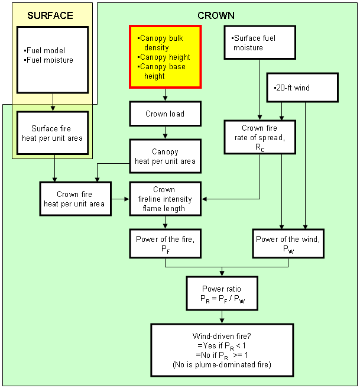

|
|
Canopy Height |
Canopy height describes the stand as it affects calculation of the wind adjustment factor in SURFACE. If canopy height is less than 6 feet (1.8 meters), then the unsheltered WAF calculation is used.
In the CROWN Module, canopy height is multiplied by canopy bulk density to get crown load, which is used to calculate crown flame length.
In the MORTALITY module, canopy height is used to find tree crown length scorched, which is used to calculate probability of mortality.
Canopy height at the site of the fire may be different from downwind canopy height in the direction firebrands are carried. Downwind canopy height is used to calculate maximum spotting distance in SPOT and is the mean cover height in the downwind direction as it affects the distance a firebrand is carried. If the forest cover is open, a value of half the tree height should be entered.
|
I/O |
Module |
If |
Notes |
| Input | SURFACE | If wind adjustment factor is calculated. | |
| CROWN | |||
| MORTALITY | |||
| Output | None |
|  |